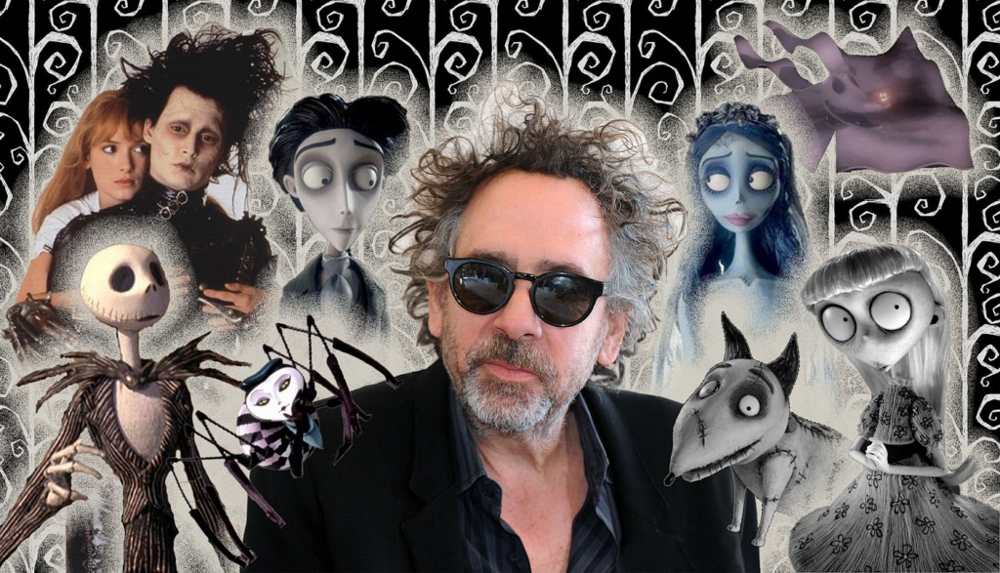
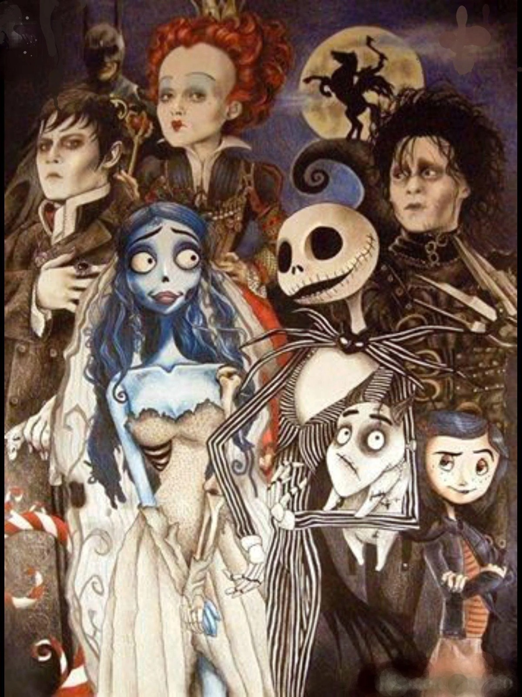
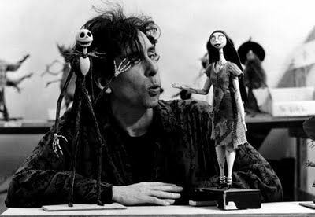

3BP
emplea frameworks para el desarrollo de software
petra rodriguez astudillo



Timothy Walter Burton, conocido como Tim Burton, es un director, productor, guionista, dibujante y animador estadounidense célebre por su estética gótica y fantasía oscura. Autor de películas como Beetlejuice, Batman, Edward Scissorhands y Charlie y la fábrica de chocolate, ha colaborado frecuentemente con Johnny Depp, Danny Elfman y Helena Bonham Carter. Sus obras abordan temas de incomprensión y diferencia, combinando humor negro y melancolía. Edad: 68 años (25 de ago. de 1958) Niños: Nell Burton, William Raymond Burton. una frase que el dijo"ESTOY EN UN MUNDO DONDE LA PALABRA NORMAL ME ASUSTA"
mandame al video mandame al video